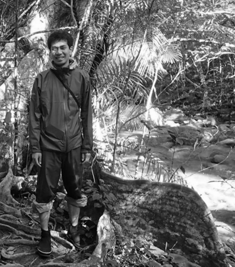

TAKAHIRO YOSHIDA’s WEBSITE
December, 2025
Welcome!
Takahiro Yoshida (吉田 崇紘) is an Assistant Professor (Kōshi) at Center for Spatial Information Science, the University of Tokyo, Japan. The foundation of all his research interests is the geographical information science. His more specific interests are:
- urban and regional analysis based on spatial statistics, spatial econometrics, and remote sensing, and its combination with compositional data analysis,
- climate change and cities with complex systems of building environments, transport networks, and human behaviors.
Admission information can be found in a webpage of Department of Socio-Cultural Environmental Studies, Graduate School of Frontier Sciences.
日本語のページ：researchmap
Updates
- December 5, 2025 [Publication] accepted a co-authored paper in Sustainability Science
- November 2, 2025 [Conference] presented a leading poster and a co-authored poster, and joined a special session The Future of Spatial Information Science: Discovered by Novel Spatial Data in the 34th annual meeting of the Geographic Information Systems Association (GISA2025)
- October 28, 2025 [Event] presented at Urban AI Symposium with Center for Urban Science + Progress, Tandon School of Engineering, New York University
- October 27, 2025 [Publication] accepted a co-authored paper in Journal of Transport & Health
- September 7, 2025 [Publication] published a lead authored book section in Urban Planning Towards Carbon Neutrality (in Japanese)
- September 2, 2025 [Conference] presented one co-authored paper and one co-authored poster in the 20th International 3D GeoInfo Conference and the 9th International Smart Data and Smart Cities Conference (3D GeoInfo & SDSC 2025)
- August 30, 2025 [Publication] accepted a co-authored paper in Applied Energy
- August 18, 2025 [Event] conducted the FY2026 Entrance Examination of Department of Socio-Cultural Environmental Studies, Graduate School of Frontier Sciences
- August 10, 2025 [Publication] published a lead authored book-section in Thematic Encyclopedia of Regional Science
- July 18, 2025 [Conference] presented one lead authored and two co-authored papers in the 11th Applied Energy Symposium and Forum: Low Carbon Cities and Urban Energy Systems (CUE2025)
- July 15, 2025 [Conference] presented a co-authored poster in the 7th Spatial Statistics Conference
- July 7, 2025 [Conference] presented a co-authored paper in the 12th International Conference on Urban Climate (ICUC12)
- June 27, 2025 [Grant] accepted and started a government funding as PI “Urban carbon mapping based on smart mater data”
- June 23, 2025 [Conference] presented a co-authored poster in the 19th International Conference on Computational Urban Planning and Urban Management (CUMPUM2025)
- June 18, 2025 [Event] hosted Cooperation Agreement Ceremony between CSIS, the University of Tokyo and School of City and Regional Planning, College of Design, Georgia Institute of Technology
- June 9, 2025 [Event] hosted International workshop on Urban Analytics with Georgia Institute of Technology (June 9-22, 2025)
- May 4, 2025 [Publication] accepted a co-authored paper in Applied Energy
- April 1, 2025 [Grant] started the KAKENHI Grants-in-Aid for Scientific Research (B) as PI “Spatial compositional data analysis”
Educational background
- Ph.D. in Policy and Planning Sciences, University of Tsukuba, March 2018.
- [Dissertation title] Methodological developments and socio-economic applications of compositional data analysis for geographical data.
- Master of Science in Engineering, University of Tsukuba, March 2015.
- Bachelor of Policy and Planning Sciences, University of Tsukuba, March 2013.
Academic experience
- April 2024 – present
- Assistant Professor (Kōshi),
Division of Spatial Information Analysis, Center for Spatial Information Science, the University of Tokyo, Japan.
- Assistant Professor (Kōshi),
- September 2022 – March 2024
- Assistant Professor,
Division of Spatial Information Analysis, Center for Spatial Information Science, the University of Tokyo, Japan.
- Assistant Professor,
- April 2021 – August 2022
- Project Assistant Professor,
Department of Urban Engineering, School of Engineering, the University of Tokyo, Japan.
- Project Assistant Professor,
- April 2018 – March 2021
- Research Associate,
Center for Global Environmental Research, National Institute for Environmental Studies, Japan.
- Research Associate,
- April 2016 – March 2018
- Research Fellow (DC2),
Japan Society for the Promotion of Science, Japan.
- Research Fellow (DC2),
(Concurrent appointments)
- April 2024 – present
- Assistant Professor (Kōshi),
Department of Socio-Cultural Environmental Studies, Graduate School of Frontier Sciences, the University of Tokyo, Japan.
- Assistant Professor (Kōshi),
- April 2024 – present
- Assistant Professor (Kōshi),
Collaborative Research Organization for the Digital Spatial Society, the University of Tokyo, Japan.
- Assistant Professor (Kōshi),
- April 2024 – present
- Assistant Professor (Kōshi),
Collaborative Research Organization for Future Regional Society, the University of Tokyo, Japan.
- Assistant Professor (Kōshi),
- April 2023 – present
- Visiting Researcher,
Social System Division, National Institute for Environmental Studies, Japan.
- Visiting Researcher,
- April 2023 – March 2024
- Assistant Professor,
Collaborative Research Organization for Future Regional Society, the University of Tokyo, Japan.
- Assistant Professor,
- April 2021 – present
- Part-Time Lecturer,
Graduate School of System Design and Management, Keio University, Japan.
- Part-Time Lecturer,
- April 2021 – March 2023
- Visiting Researcher,
Earth System Division, National Institute for Environmental Studies, Japan.
- Visiting Researcher,
- April 2019 – March 2022
- Part-Time Lecturer,
Department of International Economics, Faculty of Economics, Toyo University, Japan.
- Part-Time Lecturer,
- September 2013 – September 2013
- Intern,
Geographic Information Analysis Research Division, Geography and Crustal Dynamics Research Center, Geospatial Information Authority of Japan, Japan.
- Intern,
Contact
- E-mail: yoshida at csis.u-tokyo.ac.jp
- Address: 5-1-5 Kashiwanoha, Kashiwa-shi, Chiba 277-8568, JAPAN
- Links: Google Scholar; Web of Science; ResearchGate; researchmap; ORCID